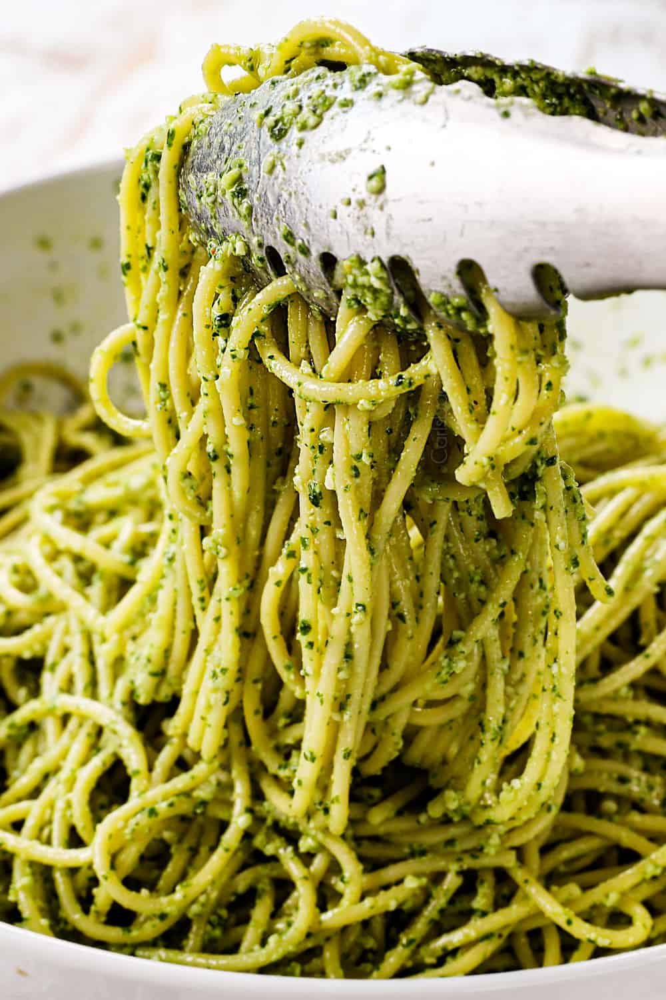

Pesto Pasta

Description
This is the best meal ever. It takes 15 minutes to prepare, takes minimal amount of dishes to wash and it is D E
L I C I O U S.
Ingredients
- 100 g of pasta - I recommend Barilla Bavette
- 40 g of pesto - either green or sundried tomatoes one
- a lot of parmesan
- black pepper (optional)
Steps
- Boil some water with good amount of salt.
- Cook the pasta according to informations on packaging.
- Add pesto and freshly grated parmesan.
- If you like an extra layer of flavor add some black pepper on top.